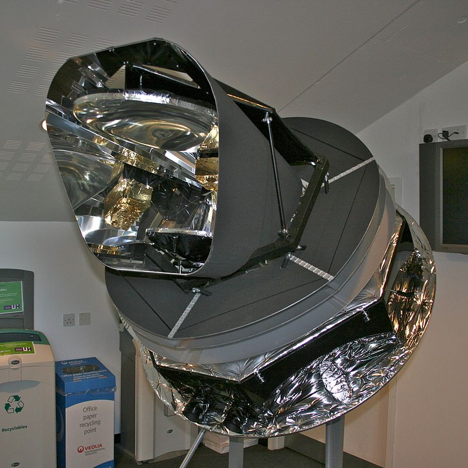

LE RAYONNEMENT COSMIQUE VUE PAR LE SATELLITE PLANCK
Le rayonnement cosmique de fond (CMB) observé par Planck. Le CMB est un instantané de la lumière la plus ancienne de notre Univers, imprimée dans le ciel alors que l'Univers avait à peine 380 000 ans. On peut apercevoir de faibles fluctuations de température qui correspondent à des régions de densités légèrement différentes et représentent l'origine de toutes les structures futures : les étoiles et les galaxies d'aujourd'hui. (Source : Agence spatiale européenne et Collaboration Planck.)
 observé par Planck")
Le 23 octobre 2013 L'Agence spatiale européenne a annoncé aujourd'hui que le télescope spatial Planck a été mis hors tension après quatre années et demie d'exploitation réussie. D'une extraordinaire précision, Planck a déterminé la position exacte d'infimes structures ténues qui témoignent de fluctuations de la lumière et de la température correspondant à des densités légèrement différentes dans la matière résiduelle du Big Bang. Initialement, le télescope devait réaliser deux sondages exhaustifs du ciel, mais il a réussi à en faire cinq au moyen de ses deux principaux instruments scientifiques, de même que huit autres complets grâce à son instrument à basse fréquence. Des centaines d'astronomes de partout au monde, y compris des cosmologues canadiens, continueront d'étudier les résultats finaux de la mission qui seront diffusés en 2014 et 2015. En mars 2013, l'équipe scientifique de Planck a publié une série de résultats étonnants provenant du télescope. Les données ont permis d'établir avec plus d'exactitude que l'Univers était âgé de 13,82 milliards d'années (soit 100 millions d'années de plus que les estimations précédentes). Les cosmologues ont également trouvé la « recette cosmique » de la composition de l'Univers : la matière normale, dont sont composées les étoiles et les galaxies comme notre Voie lactée, représente à peine 4,9 % de tout l'Univers. Par ailleurs, la matière sombre (une substance invisible dont on présume l'existence uniquement en raison des effets de sa gravité) compte pour 26,8 %. L'énergie sombre, une force mystérieuse qui se comporte à l'inverse de la force gravitationnelle en provoquant l'expansion de l'Univers, constitue 68,3 % de la composition, à savoir une proportion légèrement inférieure à ce que l'on avait avancé. La mission Planck peut compter sur des contributions de l'Agence spatiale canadienne (ASC). L'Agence finance deux équipes de recherches canadiennes qui sont parties prenantes de la collaboration scientifique Planck et qui ont participé au développement des deux instruments scientifiques complémentaires à bord du télescope, soit l'instrument à haute fréquence (HFI) et l'instrument à basse fréquence (LFI). Les professeurs J. Richard Bond de l'Université de Toronto (directeur du programme Cosmologie et gravité de l'Institut canadien de recherches avancées et membre du corps professoral de l'Institut canadien d'astrophysique théorique (ICAT)) et Douglas Scott de l'Université de la Colombie-Britannique dirigent l'équipe canadienne de Planck, laquelle se compose de membres de l'Université de l'Alberta, de l'Université Laval, de l'Université McGill ainsi que d'autres universités à Toronto et en Colombie-Britannique.
LE SATELLITE PLANCK
Planck est un observatoire spatial développé par l'Agence spatiale européenne (ESA) avec une participation de l'agence spatiale américaine, la NASA. La mission du satellite est de cartographier les infimes variations de température (ou d'intensité) du fond diffus cosmologique, rayonnement dans le domaine micro-onde montrant l'Univers tel qu'il est 380 000 ans après le Big Bang. La mission Planck est sélectionnée en 1996 pour être la troisième mission de taille moyenne du programme scientifique de l'ESA Horizon 2000. Le rayonnement étudié ne peut être observé de manière suffisamment précise que depuis l'espace. Deux satellites de la NASA — COBE à la fin des années 1980 et WMAP en 2001 — dressent une première carte du rayonnement fossile. Planck, lancé le 14 mai 2009 par un lanceur Ariane 5, a comme objectif grâce à son instrument principal HFI refroidi à 0,1 kelvin de dresser une carte 20 à 30 fois plus précise que ses prédécesseurs. La collecte des données par HFI s'achève en janvier 2012 après épuisement des isotopes hélium 3 et hélium 4 servant à refroidir les bolomètres utilisés comme détecteurs. Une première interprétation complète des données collectées est présentée en mars 2013. Les résultats complets sont rendus publics en décembre 2014 et publiés au début de 2015. Les paramètres cosmologiques qui décrivent l'Univers actuel et son histoire, tels que l'âge de l'Univers et sa composition initiale, sont affinés grâce à la précision inégalée des données recueillies par Planck. Ces éléments permettent de mieux comprendre certains aspects de la physique de l'Univers primordial, ainsi que le mode de formation des structures à grande échelle de l'Univers. Dans l'ensemble, les données de Planck confirment la théorie de l'inflation cosmique, un des piliers du modèle standard de la cosmologie, la théorie la plus couramment admise concernant le mode de formation de l'Univers observable.